Inspirations
The scientists, mathematicians and engineers who drew me into this field.
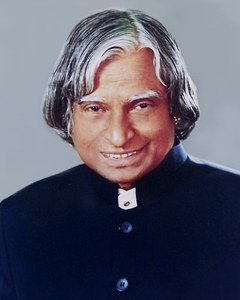
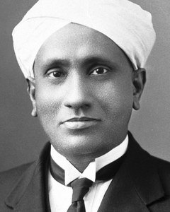
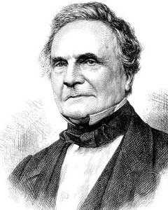
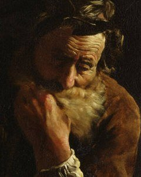
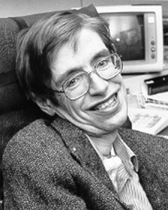
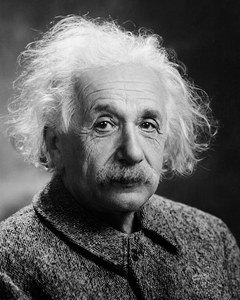
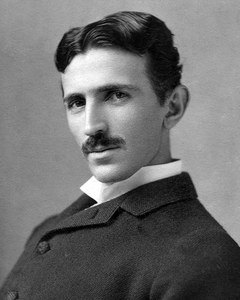
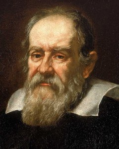
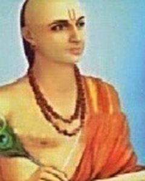
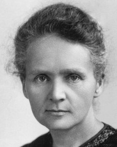
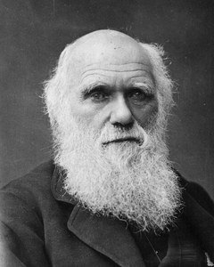
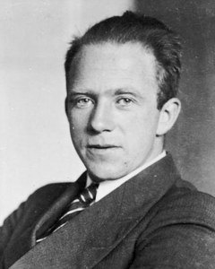
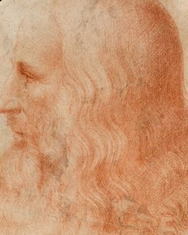
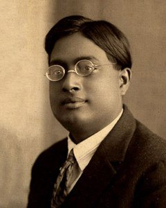
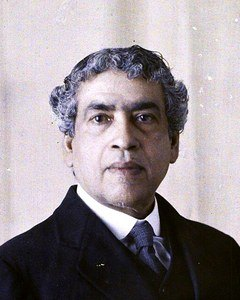
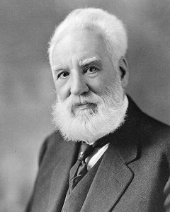
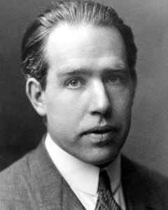
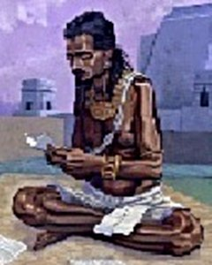
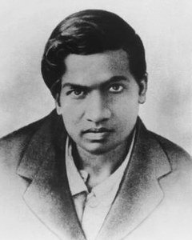
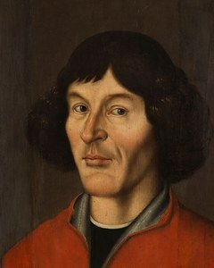
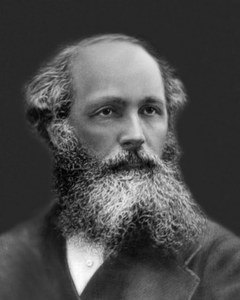
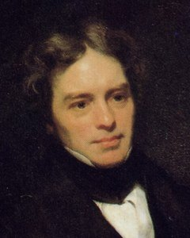
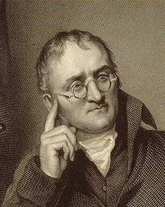
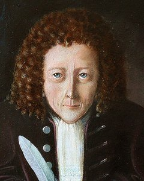
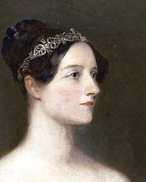
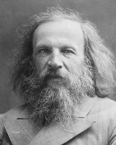
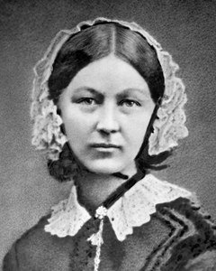
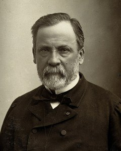
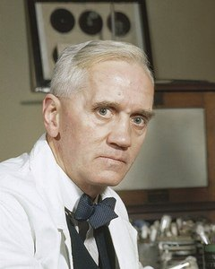
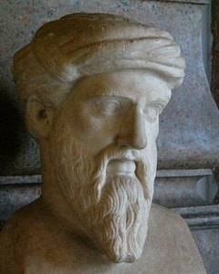
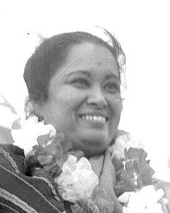
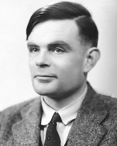
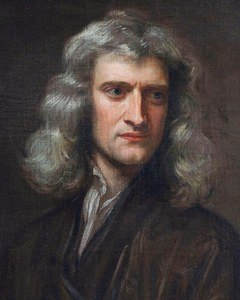
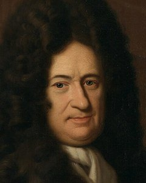
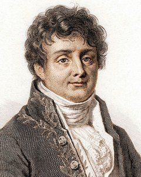
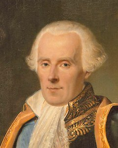
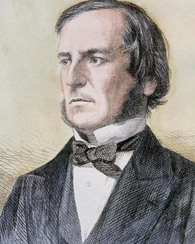
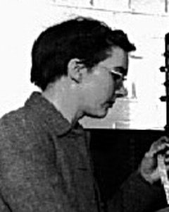
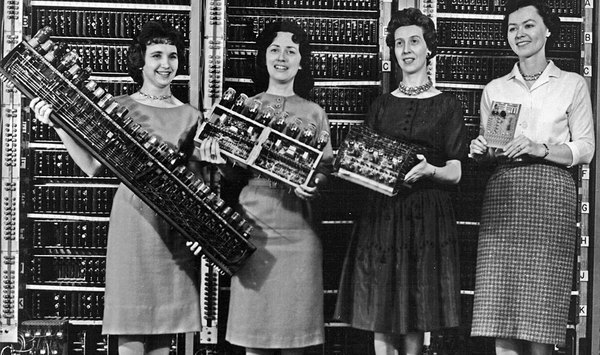
When I was young I made a rough collage of the people who inspire me. Each one was added after careful thought, and each had a story behind why they inspired me. I don't remember all of those stories now, but they continue to inspire me — so this is a re-edited version. If you'd like, you can still see the original collage.
Image credits
Portraits via Wikimedia Commons, used under the licence linked for each.
- A. P. J. Abdul Kalam — Government of India, GODL-India
- C. V. Raman — Nobel Foundation, Public domain
- Charles Babbage — Thomas Dewell Scott, Public domain
- Archimedes — Domenico Fetti, Public domain
- Stephen Hawking — NASA, Public domain
- Albert Einstein — Oren Jack Turner, Public domain
- Nikola Tesla — Napoleon Sarony, Public domain
- Galileo Galilei — Justus Sustermans, Public domain
- Aryabhata — from my original collage; source unknown
- Marie Curie — Unknown author, Public domain
- Charles Darwin — Herbert Rose Barraud, Public domain
- Werner Heisenberg — Unknown author, CC BY-SA 3.0 de
- Leonardo da Vinci — Attributed to Francesco Melzi, Public domain
- Satyendra Nath Bose — Unknown author, Public domain
- Jagadish Chandra Bose — Georges Chevalier, CC BY-SA 4.0
- Alexander Graham Bell — Moffett Studio, Public domain
- Niels Bohr — The American Institute of Physics credits the photo [1] to AB Lagrelius & Westph, Public domain
- Brahmagupta — from my original collage; source unknown
- Srinivasa Ramanujan — Konrad Jacobs, Public domain
- Nicolaus Copernicus — Unknown author, Public domain
- James Clerk Maxwell — Unknown author, Public domain
- Michael Faraday — Thomas Phillips, Public domain
- John Dalton — Unknown author, CC BY 4.0
- Robert Hooke — Rita Greer, FAL
- Ada Lovelace — Margaret Sarah Carpenter, Public domain
- Dmitri Mendeleev — Unknown author, Public domain
- Florence Nightingale — Henry Hering (1814-1893), Public domain
- Louis Pasteur — Paul Nadar, Public domain
- Alexander Fleming — Official photographer, Public domain
- Pythagoras — The original uploader was Galilea at German Wikipedia., CC BY-SA 3.0
- Shakuntala Devi — 中央通訊社, Public domain
- Alan Turing — Elliott & Fry, Public domain
- Isaac Newton — Godfrey Kneller, Public domain
- Gottfried Leibniz — Christoph Bernhard Francke, Public domain
- Joseph Fourier — Julien-Léopold Boilly, Public domain
- Pierre-Simon Laplace — Jean-Baptiste Paulin Guérin, Public domain
- George Boole — Unknown author, Public domain
- Kathleen Booth — from my original collage; source unknown
- Four women in computing — Unknown author, Public domain